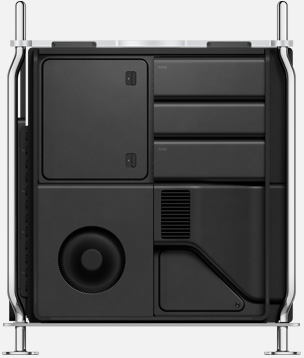
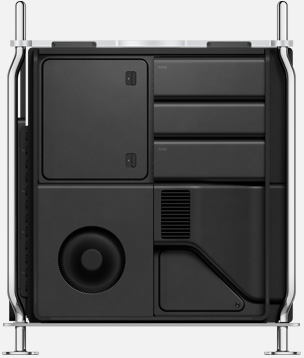
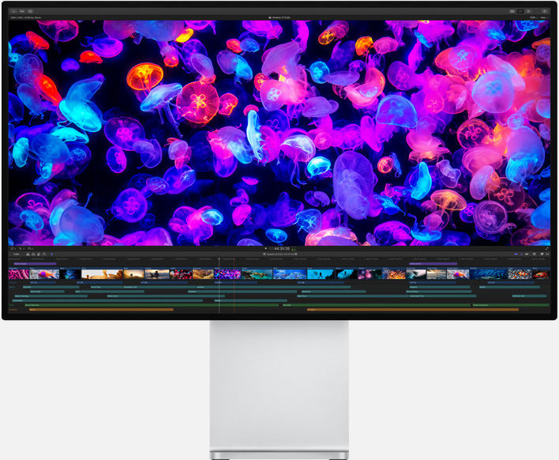
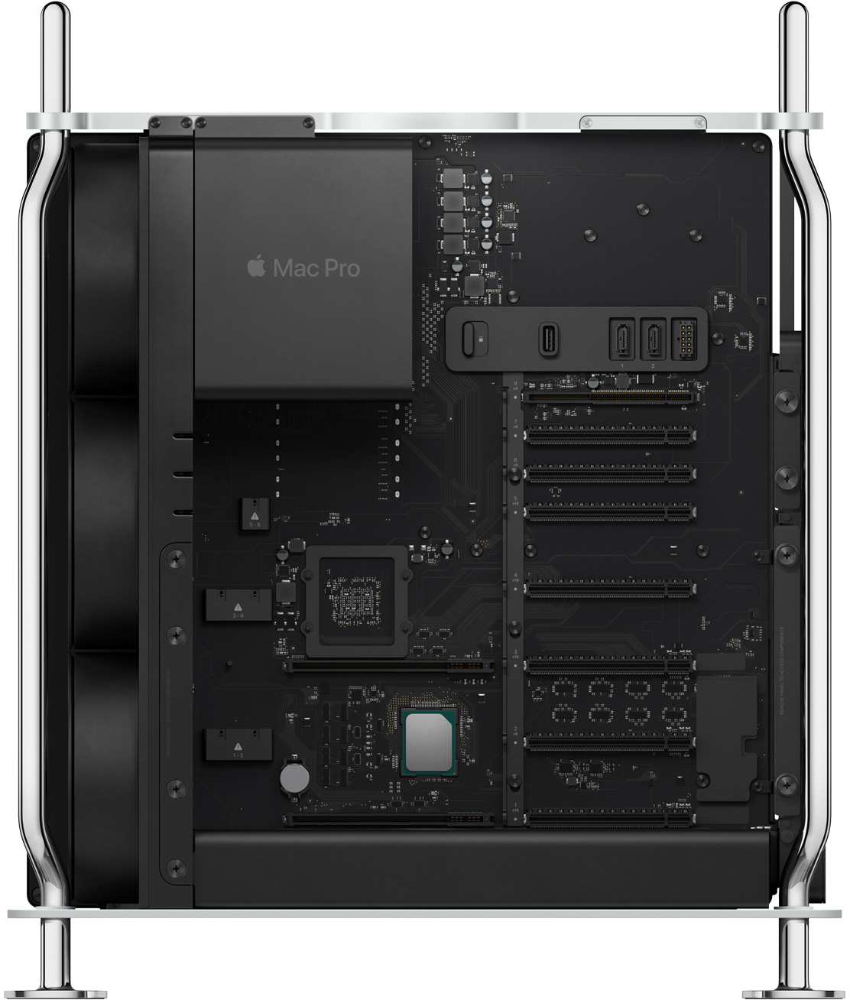
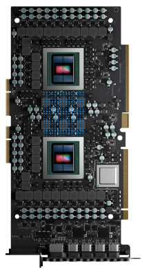
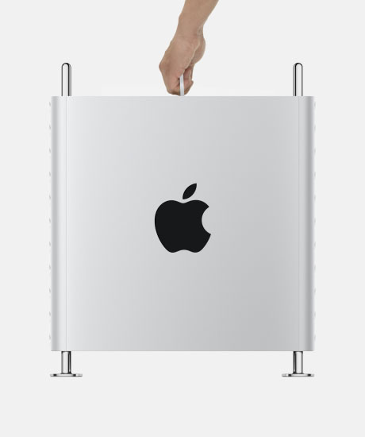
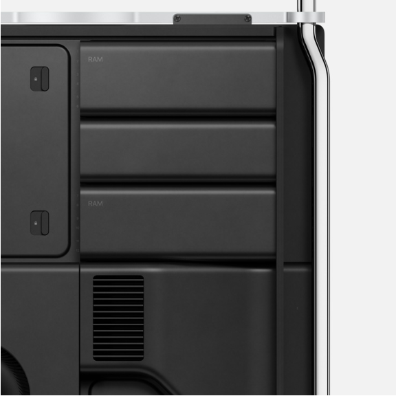

Mac Pro
以实力刷新一切。 这是一部方方面面均登峰造极的 Mac。
它拥有极致的性能、强大的扩展能力，以及卓越的配置潜能，
让广大专业用户能突破极限，挑战不可能。
 

功能决定形式。 Mac Pro 设计的各个方面都追求着性能表现。
环绕不锈钢内框的铝金属机箱，在提起之后，
即可 360 度全方位直达各个组件和众多配置选项。
万般可能，就从这里开启。

亮丽多彩，让人目不转睛。  
最高达 28 核的威力，纵情挥洒创造力。 Mac Pro 专为对中央处理器性能有着极高要求的专业用户而设计。
无论是后期制作渲染，演奏数百种虚拟乐器，还是模拟多部设备来运行一款 iOS app，
它都游刃有余。系统的核心是一款全新 Intel Xeon 处理器，最高可达 28 核，而这也是 Mac 历来之最。
此外，它还配备大型二级缓存和共享三级缓存，并拥有 64 条 PCI Express 通道，提供了极高的处理器数据传输带宽。
 
让我们重新认识一下内存。 多核心工作站处理器需要极大的内存支持。
全新 Mac Pro 配有六通道的高速 ECC 内存和 12 个实体 DIMM 插槽，
内存最高可扩充至 1.5TB，因此专业用户能迅速流畅地进行各种工作，
如处理大型项目、分析庞大数据集或运行多个专业应用程序等。
一般的塔式主机将内存条塞在很难够到的位置，
而 Mac Pro 采用了双面主板，将接触和操作变得非常容易。
最高达 2933MHz DDR4 ECC 内存
最高达 140GB/s 显存带宽
六通道内存系统
Apple 于 2019 年 2 月使用试生产的配备 3.2GHz 六核 Intel Core i7 处理器和 32GB RAM 的 21.5 英寸 iMac 系统， 试生产的配备 3.6GHz 八核 Intel Core i9 处理器和 64GB RAM 的 27
英寸 iMac 系统；以及已上市的配备 3.6GHz 四核 Intel Core i7 处理器和 32GB RAM 的 21.5 英寸 iMac 系统，已上市的配备 4.2GHz 四核 Intel Core i7 处理器 和 64GB RAM 的 27 英寸
iMac 系统进行了此项测试。Autodesk Maya 2019 测试使用一个 399.6MB 的场景进行。性能测试在特定电脑系统上进行， 能够大致反映 iMac 的性能。Apple 于 2019 年 2 月使用试生产的配备 3.2GHz 六核 Intel Core i7 处理器、Radeon Pro Vega 20 图形处理器 (4GB VRAM) 和 32GB RAM 的 21.5 英寸 iMac 系统，试生产的配备
3.6GHz 八核 Intel Core i9 处理器、Radeon Pro Vega 48 图形处理器 (8GB VRAM) 和 64GB RAM 的 27 英寸 iMac 系统；以及已上市的配备 3.6GHz 四核 Intel Core i7 处理器、
Radeon Pro 560 图形处理器 (4GB VRAM) 和 32GB RAM 的 21.5 英寸 iMac 系统 ，已上市的配备 4.2GHz 四核 Intel Core i7 处理器、Radeon Pro 580 图形处理器 (8GB VRAM)
和 64GB RAM 的 27 英寸 iMac 系统进行了此项测试。 测试使用 DaVinci Resolve Studio 15 进行，采用 14 种常用特效和一个分辨率为 3840x2160、帧率为 24 fps 的 10 秒超高清项目。
性能测试在特定电脑系统上进行， 能够大致反映 iMac 的性能。Apple 于 2019 年 2 月使用试生产的配备 3.2GHz 六核 Intel Core i7 处理器和 32GB RAM 的 21.5 英寸 iMac 系统，试生产的配备 3.6GHz 八核 Intel Core i9 处理器和 64GB RAM 的 27
英寸 iMac 系统；以及已上市的配备 3.6GHz 四核 Intel Core i7 处理器和 32GB RAM 的 21.5 英寸 iMac 系统，已上市的配备 4.2GHz 四核 Intel Core i7 处理器和 64GB RAM 的 27 英寸
iMac 系统进行了此项测试。测试使用 Logic Pro X 10.4.4 进行，采用一个包含 200 个 Sculpture 合成器音轨的项目 。播放时启用单个音轨，直至中央处理器超载为止。性能测试在特定电
脑系统上进行，能够大致反映 iMac 的性能。Apple 于 2019 年 2 月使用试生产的配备 3.2GHz 六核 Intel Core i7 处理器和 32GB RAM 的 21.5 英寸 iMac 系统，试生产的配备 3.6GHz 八核 Intel Core i9 处理器和 64GB RAM 的 27
英寸 iMac 系统；以及已上市的配备 3.6GHz 四核 Intel Core i7 处理器和 32GB RAM 的 21.5 英寸 iMac 系统， 已上市的配备 4.2GHz 四核 Intel Core i7 处理器和 64GB RAM 的 27 英寸
iMac 系统进行了此项测试。测试使用 Mathematica v11.3.0 进行，采用内置基准 WolframMark。性能测试在特定电脑系统上进行，能够大致反映 iMac 的性能。Apple 于 2019 年 2 月使用试生产的配备 3.2GHz 六核 Intel Core i7 处理器和 32GB RAM 的 21.5 英寸 iMac 系统，试生产的配备 3.6GHz 八核 Intel Core i9 处理器和 64GB RAM 的 27
英寸 iMac 系统；以及已上市的配备 3.6GHz 四核 Intel Core i7 处理器和 32GB RAM 的 21.5 英寸 iMac 系统， 已上市的配备 4.2GHz 四核 Intel Core i7 处理器和 64GB RAM 的 27 英寸
iMac 系统进行了此项测试。测试使用 Adobe Photoshop CC 2019 20.0.3 进行， 采用结晶化、点状化、径向模糊、形状模糊、蒙尘与划痕以及中间值滤镜。性能测试在特定电脑系统上
进行，能够大致反映 iMac 的性能。Apple 于 2019 年 2 月使用试生产的配备 3.2GHz 六核 Intel Core i7 处理器和 32GB RAM 的 21.5 英寸 iMac 系统，试生产的配备 3.6GHz 八核 Intel Core i9 处理器和 64GB RAM 的 27
英寸 iMac 系统；以及已上市的配备 3.6GHz 四核 Intel Core i7 处理器和 32GB RAM 的 21.5 英寸 iMac 系统， 已上市的配备 4.2GHz 四核 Intel Core i7 处理器和 64GB RAM 的 27 英寸
iMac 系统进行了此项测试。测试使用 Adobe Lightroom Classic CC 8.2 进行， 采用 780 张 RAW 图像。性能测试在特定电脑系统上进行，能够大致反映 iMac 的性能。
- 账户
- 管理你的 Apple ID
- Apple Store 账户
- iCloud.com
- Apple 价值观
- 辅助功能
- 环境责任
- 隐私
- 供应商责任
- none
- none
- none
更多选购方式：查找你附近的 Apple Store 零售店
及更多门店，或者致电 400-666-8800。
Copyright © 2019 Apple Inc. 保留所有权利。
Copyright © 2019 Apple Inc. 保留所有权利。